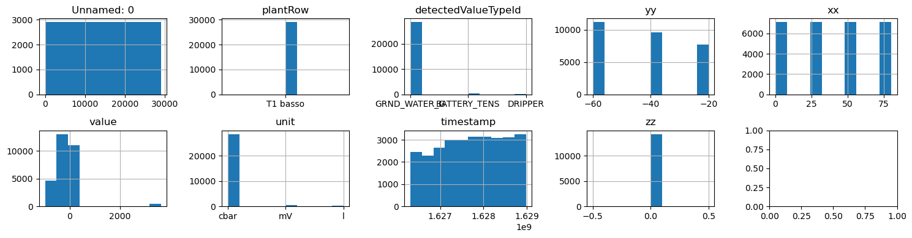
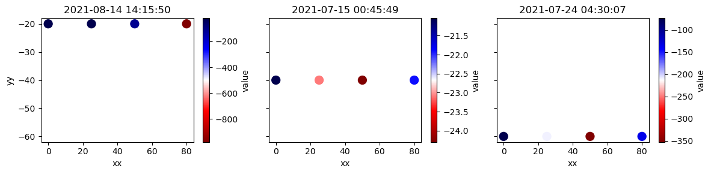
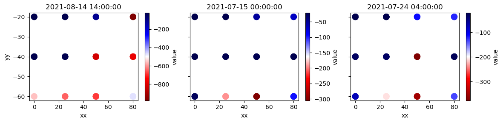

From data lake to data warehouse
DISI — University of Bologna
m.francia@unibo.it
From data lake to data warehouse
Disclaimer: - Link to the AWS academy login: https://awsacademy.instructure.com/login/canvas - At the end of the lab, remember to Stop/Destroy the created services. (Why?) - These slides are directly generated from the notebook (this notebook = slides) - Upload the Notebook to Sagemaker (not in COLAB!) - The second part of the lab requires Tableau Desktop installed on your machine
Known issues: - AWS classroom does not work on Safari. Solution: choose another browser - Tableau Desktop had problems on macOS when connecting to Postgres. Solution: use the lab’s computer
A data warehouse and a data lake serve different needs and use cases.
A data lake stores relational data from business applications, and non-relational data - The structure of the data or schema is not defined when data is captured - You can store all of your data without careful design or the need to know what questions you might need answers
A data warehouse is a database optimized to analyze relational data coming from business applications - The data structure and schema are defined in advance to optimize for fast SQL queries - The results are typically used for operational reporting and analysis - Data is cleaned, enriched, and transformed so it can act as the single source of truth
Organizations are evolving their warehouse to include data lakes, and enable diverse query capabilities
Goal: build a sub-module of the expert system, namely a DWH to monitor historical trends of soil moisture
Necessary steps:
- Create a data lake (AWS S3)
- Collect and store the sensor data (manually)
- KISS: we start with a .csv with sensor data
- Do ETL (AWS SageMaker and/or AWS Glue)
- Build a (relational) data warehouse (AWS RDS)
- Query the data warehouse (Tableau)
1. Create a data lake
See the AWS console - https://awsacademy.instructure.com/login/canvas

image

image
Start the lab

When AWS is green, click on it


image
AWS Simple Storage Service (S3) - A serverless object storage service offering industry-leading scalability, data availability, security, and performance. - Customers of all sizes and industries can store and protect any amount of data for virtually any use case, such as data lakes
Create two buckets:

image
2. Collect and store the sensor data (manually)
We need a working environment.
Amazon SageMaker - Fully managed service that provides machine learning (ML) capabilities for data scientists and developers to prepare, build, train, and deploy high-quality ML models efficiently
KISS: we start with a .csv with sensor data - http://big.csr.unibo.it/projects/nosql-datasets/watering-data-1661269649253.csv

image

image

image


Code
import awswrangler as wr
import pandas as pd
file_name = "watering-data-1661269649253.csv" # name of the dataset
df = pd.read_csv("http://big.csr.unibo.it/projects/nosql-datasets/" + file_name) # import the dataset from unibo's server
wr.s3.to_csv(df, path=input_bucket + file_name) # write it to the data lake{'paths': ['s3://landing-raw-wateringsensors-1234/watering-data-1661269649253.csv'],
'partitions_values': {}}3. Do ETL (AWS SageMaker)
Code
s3://landing-raw-wateringsensors-1234/watering-data-1661269649253.csv| Unnamed: 0 | plantRow | detectedValueTypeId | yy | xx | value | unit | timestamp | zz | |
|---|---|---|---|---|---|---|---|---|---|
| 0 | 0 | T1 basso | GRND_WATER_G | -20.0 | 25.0 | -21.616472 | cbar | 1628951453 | NaN |
| 1 | 1 | T1 basso | GRND_WATER_G | -20.0 | 50.0 | -113.354793 | cbar | 1628950550 | NaN |
| 2 | 2 | T1 basso | GRND_WATER_G | -20.0 | 0.0 | -21.041212 | cbar | 1628947848 | 0.0 |
| 3 | 3 | T1 basso | GRND_WATER_G | -20.0 | 0.0 | -21.328847 | cbar | 1628948747 | 0.0 |
| 4 | 4 | T1 basso | GRND_WATER_G | -20.0 | 25.0 | -130.458021 | cbar | 1628657108 | NaN |
| ... | ... | ... | ... | ... | ... | ... | ... | ... | ... |
| 29059 | 29059 | T1 basso | GRND_WATER_G | -60.0 | 0.0 | -74.186077 | cbar | 1627102804 | 0.0 |
| 29060 | 29060 | T1 basso | GRND_WATER_G | -60.0 | 25.0 | -209.033680 | cbar | 1627101007 | NaN |
| 29061 | 29061 | T1 basso | GRND_WATER_G | -60.0 | 50.0 | -352.458317 | cbar | 1627101905 | NaN |
| 29062 | 29062 | T1 basso | GRND_WATER_G | -60.0 | 50.0 | -352.458317 | cbar | 1627101007 | NaN |
| 29063 | 29063 | T1 basso | GRND_WATER_G | -60.0 | 25.0 | -208.705472 | cbar | 1627102804 | NaN |
29064 rows × 9 columns
Data understanding
plantRow: name of the field in which we have the sensorsdetectedValueTypeId: type of the sensor dataxx,yy, andzz: displacement of the sensor with respect to the drippervalue: measurementunit: unit of measurementtimestamp: when the measurement has been recorded
Data profiling
| count | mean | std | min | 25% | 50% | 75% | max | |
|---|---|---|---|---|---|---|---|---|
| Unnamed: 0 | 29064.0 | 1.453150e+04 | 8390.198448 | 0.000000e+00 | 7.265750e+03 | 1.453150e+04 | 2.179725e+04 | 2.906300e+04 |
| yy | 28512.0 | -4.240741e+01 | 16.099585 | -6.000000e+01 | -6.000000e+01 | -4.000000e+01 | -2.000000e+01 | -2.000000e+01 |
| xx | 28512.0 | 3.875000e+01 | 29.660046 | 0.000000e+00 | 1.875000e+01 | 3.750000e+01 | 5.750000e+01 | 8.000000e+01 |
| value | 29064.0 | -1.821906e+02 | 506.803601 | -9.885007e+02 | -3.890425e+02 | -1.446921e+02 | -2.430051e+01 | 3.641000e+03 |
| timestamp | 29064.0 | 1.627720e+09 | 757387.611829 | 1.626307e+09 | 1.627103e+09 | 1.627749e+09 | 1.628371e+09 | 1.628985e+09 |
| zz | 14256.0 | 0.000000e+00 | 0.000000 | 0.000000e+00 | 0.000000e+00 | 0.000000e+00 | 0.000000e+00 | 0.000000e+00 |
<class 'pandas.core.frame.DataFrame'>
RangeIndex: 29064 entries, 0 to 29063
Data columns (total 9 columns):
# Column Non-Null Count Dtype
--- ------ -------------- -----
0 Unnamed: 0 29064 non-null int64
1 plantRow 29064 non-null object
2 detectedValueTypeId 29064 non-null object
3 yy 28512 non-null float64
4 xx 28512 non-null float64
5 value 29064 non-null float64
6 unit 29064 non-null object
7 timestamp 29064 non-null int64
8 zz 14256 non-null float64
dtypes: float64(4), int64(2), object(3)
memory usage: 2.0+ MBData distribution
The zz column contains missing values and a single non-null value (0), what should we do?
| Unnamed: 0 | plantRow | detectedValueTypeId | yy | xx | value | unit | timestamp | |
|---|---|---|---|---|---|---|---|---|
| 0 | 0 | T1 basso | GRND_WATER_G | -20.0 | 25.0 | -21.616472 | cbar | 1628951453 |
| 1 | 1 | T1 basso | GRND_WATER_G | -20.0 | 50.0 | -113.354793 | cbar | 1628950550 |
| 2 | 2 | T1 basso | GRND_WATER_G | -20.0 | 0.0 | -21.041212 | cbar | 1628947848 |
| 3 | 3 | T1 basso | GRND_WATER_G | -20.0 | 0.0 | -21.328847 | cbar | 1628948747 |
| 4 | 4 | T1 basso | GRND_WATER_G | -20.0 | 25.0 | -130.458021 | cbar | 1628657108 |
| ... | ... | ... | ... | ... | ... | ... | ... | ... |
| 29059 | 29059 | T1 basso | GRND_WATER_G | -60.0 | 0.0 | -74.186077 | cbar | 1627102804 |
| 29060 | 29060 | T1 basso | GRND_WATER_G | -60.0 | 25.0 | -209.033680 | cbar | 1627101007 |
| 29061 | 29061 | T1 basso | GRND_WATER_G | -60.0 | 50.0 | -352.458317 | cbar | 1627101905 |
| 29062 | 29062 | T1 basso | GRND_WATER_G | -60.0 | 50.0 | -352.458317 | cbar | 1627101007 |
| 29063 | 29063 | T1 basso | GRND_WATER_G | -60.0 | 25.0 | -208.705472 | cbar | 1627102804 |
29064 rows × 8 columns
What else can we do?
- Do we need to store the
plantRow? - Do the sensors from the same
detectedValueTypeIdshare the sameunit? - Do we care about all the sensor types (i.e.,
detectedValueTypeId)?
Drop the “useless” columns
| Unnamed: 0 | plantRow | detectedValueTypeId | yy | xx | value | unit | timestamp | |
|---|---|---|---|---|---|---|---|---|
| 0 | 0 | T1 basso | GRND_WATER_G | -20.0 | 25.0 | -21.616472 | cbar | 1628951453 |
| 1 | 1 | T1 basso | GRND_WATER_G | -20.0 | 50.0 | -113.354793 | cbar | 1628950550 |
| 2 | 2 | T1 basso | GRND_WATER_G | -20.0 | 0.0 | -21.041212 | cbar | 1628947848 |
| 3 | 3 | T1 basso | GRND_WATER_G | -20.0 | 0.0 | -21.328847 | cbar | 1628948747 |
| 4 | 4 | T1 basso | GRND_WATER_G | -20.0 | 25.0 | -130.458021 | cbar | 1628657108 |
| ... | ... | ... | ... | ... | ... | ... | ... | ... |
| 29059 | 29059 | T1 basso | GRND_WATER_G | -60.0 | 0.0 | -74.186077 | cbar | 1627102804 |
| 29060 | 29060 | T1 basso | GRND_WATER_G | -60.0 | 25.0 | -209.033680 | cbar | 1627101007 |
| 29061 | 29061 | T1 basso | GRND_WATER_G | -60.0 | 50.0 | -352.458317 | cbar | 1627101905 |
| 29062 | 29062 | T1 basso | GRND_WATER_G | -60.0 | 50.0 | -352.458317 | cbar | 1627101007 |
| 29063 | 29063 | T1 basso | GRND_WATER_G | -60.0 | 25.0 | -208.705472 | cbar | 1627102804 |
29064 rows × 8 columns
Drop the useless rows
Code
| Unnamed: 0 | plantRow | yy | xx | value | unit | timestamp | |
|---|---|---|---|---|---|---|---|
| 0 | 0 | T1 basso | -20.0 | 25.0 | -21.616472 | cbar | 1628951453 |
| 1 | 1 | T1 basso | -20.0 | 50.0 | -113.354793 | cbar | 1628950550 |
| 2 | 2 | T1 basso | -20.0 | 0.0 | -21.041212 | cbar | 1628947848 |
| 3 | 3 | T1 basso | -20.0 | 0.0 | -21.328847 | cbar | 1628948747 |
| 4 | 4 | T1 basso | -20.0 | 25.0 | -130.458021 | cbar | 1628657108 |
| ... | ... | ... | ... | ... | ... | ... | ... |
| 29059 | 29059 | T1 basso | -60.0 | 0.0 | -74.186077 | cbar | 1627102804 |
| 29060 | 29060 | T1 basso | -60.0 | 25.0 | -209.033680 | cbar | 1627101007 |
| 29061 | 29061 | T1 basso | -60.0 | 50.0 | -352.458317 | cbar | 1627101905 |
| 29062 | 29062 | T1 basso | -60.0 | 50.0 | -352.458317 | cbar | 1627101007 |
| 29063 | 29063 | T1 basso | -60.0 | 25.0 | -208.705472 | cbar | 1627102804 |
28512 rows × 7 columns
Snapshots of sensor data at different timestamps
What if we bin our data hourly?
Data preparation - Bin data hourly, average the soil moisture for each sensor - Create derived attributes (e.g., time/sensor hierarchy) useful for posterior analysis
| plant | timestamp | dist | depth | value | hour | date | month | year | sensor | |
|---|---|---|---|---|---|---|---|---|---|---|
| 0 | T1 basso | 2021-07-15 00:00:00 | 0.0 | -60.0 | -27.366967 | 2021-07-15 00 | 2021-07-15 | 2021-07 | 2021 | (0.0, -60.0) |
| 1 | T1 basso | 2021-07-15 00:00:00 | 0.0 | -40.0 | -21.041212 | 2021-07-15 00 | 2021-07-15 | 2021-07 | 2021 | (0.0, -40.0) |
| 2 | T1 basso | 2021-07-15 00:00:00 | 0.0 | -20.0 | -21.041212 | 2021-07-15 00 | 2021-07-15 | 2021-07 | 2021 | (0.0, -20.0) |
| 3 | T1 basso | 2021-07-15 00:00:00 | 25.0 | -60.0 | -193.593787 | 2021-07-15 00 | 2021-07-15 | 2021-07 | 2021 | (25.0, -60.0) |
| 4 | T1 basso | 2021-07-15 00:00:00 | 25.0 | -40.0 | -23.102383 | 2021-07-15 00 | 2021-07-15 | 2021-07 | 2021 | (25.0, -40.0) |
| ... | ... | ... | ... | ... | ... | ... | ... | ... | ... | ... |
| 8751 | T1 basso | 2021-08-14 23:00:00 | 50.0 | -40.0 | -840.353649 | 2021-08-14 23 | 2021-08-14 | 2021-08 | 2021 | (50.0, -40.0) |
| 8752 | T1 basso | 2021-08-14 23:00:00 | 50.0 | -20.0 | -129.913714 | 2021-08-14 23 | 2021-08-14 | 2021-08 | 2021 | (50.0, -20.0) |
| 8753 | T1 basso | 2021-08-14 23:00:00 | 80.0 | -60.0 | -462.190096 | 2021-08-14 23 | 2021-08-14 | 2021-08 | 2021 | (80.0, -60.0) |
| 8754 | T1 basso | 2021-08-14 23:00:00 | 80.0 | -40.0 | -791.964873 | 2021-08-14 23 | 2021-08-14 | 2021-08 | 2021 | (80.0, -40.0) |
| 8755 | T1 basso | 2021-08-14 23:00:00 | 80.0 | -20.0 | -965.569411 | 2021-08-14 23 | 2021-08-14 | 2021-08 | 2021 | (80.0, -20.0) |
8756 rows × 10 columns
Finally, save the data back to S3.
4. Build a (relational) data warehouse (AWS RDS)
Amazon Relational Database Service (Amazon RDS) - A collection of managed services that makes it simple to set up, operate, and scale relational databases in the cloud

image
image

image

image
By default, even if you have set “Public accessibility” to “Yes”, the “Security Group” is still not allowing external connections yet.
- Virtual private clouds (VPC): a VPC is a virtual network that closely resembles a traditional network that you’d operate in your own data center
- A security group acts as a virtual firewall for your AWS instances to control incoming/outgoing traffic
- When you launch an instance, you can specify one or more security groups
- If you don’t specify a security group, Amazon EC2 uses the default security group
- Your AWS account automatically has a default security group for the default VPC in each Region
From Default security groups (2022-11-15)

image
You can add or remove inbound and outbound rules for any default security group.

image

image

image
Which is the schema of our dataset?
Index(['plant', 'timestamp', 'dist', 'depth', 'value', 'hour', 'date', 'month',
'year', 'sensor'],
dtype='object')| plant | timestamp | dist | depth | value | hour | date | month | year | sensor | |
|---|---|---|---|---|---|---|---|---|---|---|
| 0 | T1 basso | 2021-07-15 00:00:00 | 0.0 | -60.0 | -27.366967 | 2021-07-15 00 | 2021-07-15 | 2021-07 | 2021 | (0.0, -60.0) |
| 1 | T1 basso | 2021-07-15 00:00:00 | 0.0 | -40.0 | -21.041212 | 2021-07-15 00 | 2021-07-15 | 2021-07 | 2021 | (0.0, -40.0) |
| 2 | T1 basso | 2021-07-15 00:00:00 | 0.0 | -20.0 | -21.041212 | 2021-07-15 00 | 2021-07-15 | 2021-07 | 2021 | (0.0, -20.0) |
| 3 | T1 basso | 2021-07-15 00:00:00 | 25.0 | -60.0 | -193.593787 | 2021-07-15 00 | 2021-07-15 | 2021-07 | 2021 | (25.0, -60.0) |
| 4 | T1 basso | 2021-07-15 00:00:00 | 25.0 | -40.0 | -23.102383 | 2021-07-15 00 | 2021-07-15 | 2021-07 | 2021 | (25.0, -40.0) |
| ... | ... | ... | ... | ... | ... | ... | ... | ... | ... | ... |
| 8751 | T1 basso | 2021-08-14 23:00:00 | 50.0 | -40.0 | -840.353649 | 2021-08-14 23 | 2021-08-14 | 2021-08 | 2021 | (50.0, -40.0) |
| 8752 | T1 basso | 2021-08-14 23:00:00 | 50.0 | -20.0 | -129.913714 | 2021-08-14 23 | 2021-08-14 | 2021-08 | 2021 | (50.0, -20.0) |
| 8753 | T1 basso | 2021-08-14 23:00:00 | 80.0 | -60.0 | -462.190096 | 2021-08-14 23 | 2021-08-14 | 2021-08 | 2021 | (80.0, -60.0) |
| 8754 | T1 basso | 2021-08-14 23:00:00 | 80.0 | -40.0 | -791.964873 | 2021-08-14 23 | 2021-08-14 | 2021-08 | 2021 | (80.0, -40.0) |
| 8755 | T1 basso | 2021-08-14 23:00:00 | 80.0 | -20.0 | -965.569411 | 2021-08-14 23 | 2021-08-14 | 2021-08 | 2021 | (80.0, -20.0) |
8756 rows × 10 columns
- Is this schema normalized?
- Is this the schema you are used to when building DWH?
We need to distinguish the fact and the dimension tables: - FT: Measurement - DT1: Time - DT2: Sensor
| timestamp | date | month | year | |
|---|---|---|---|---|
| 0 | 2021-07-15 00:00:00 | 2021-07-15 | 2021-07 | 2021 |
| 12 | 2021-07-15 01:00:00 | 2021-07-15 | 2021-07 | 2021 |
| 24 | 2021-07-15 02:00:00 | 2021-07-15 | 2021-07 | 2021 |
| 36 | 2021-07-15 03:00:00 | 2021-07-15 | 2021-07 | 2021 |
| 48 | 2021-07-15 04:00:00 | 2021-07-15 | 2021-07 | 2021 |
| ... | ... | ... | ... | ... |
| 8696 | 2021-08-14 19:00:00 | 2021-08-14 | 2021-08 | 2021 |
| 8708 | 2021-08-14 20:00:00 | 2021-08-14 | 2021-08 | 2021 |
| 8720 | 2021-08-14 21:00:00 | 2021-08-14 | 2021-08 | 2021 |
| 8732 | 2021-08-14 22:00:00 | 2021-08-14 | 2021-08 | 2021 |
| 8744 | 2021-08-14 23:00:00 | 2021-08-14 | 2021-08 | 2021 |
744 rows × 4 columns
| sensor | dist | depth | plant | |
|---|---|---|---|---|
| 0 | (0.0, -60.0) | 0.0 | -60.0 | T1 basso |
| 1 | (0.0, -40.0) | 0.0 | -40.0 | T1 basso |
| 2 | (0.0, -20.0) | 0.0 | -20.0 | T1 basso |
| 3 | (25.0, -60.0) | 25.0 | -60.0 | T1 basso |
| 4 | (25.0, -40.0) | 25.0 | -40.0 | T1 basso |
| 5 | (25.0, -20.0) | 25.0 | -20.0 | T1 basso |
| 6 | (50.0, -60.0) | 50.0 | -60.0 | T1 basso |
| 7 | (50.0, -40.0) | 50.0 | -40.0 | T1 basso |
| 8 | (50.0, -20.0) | 50.0 | -20.0 | T1 basso |
| 9 | (80.0, -60.0) | 80.0 | -60.0 | T1 basso |
| 10 | (80.0, -40.0) | 80.0 | -40.0 | T1 basso |
| 11 | (80.0, -20.0) | 80.0 | -20.0 | T1 basso |
| sensor | timestamp | value | |
|---|---|---|---|
| 0 | (0.0, -60.0) | 2021-07-15 00:00:00 | -27.366967 |
| 1 | (0.0, -40.0) | 2021-07-15 00:00:00 | -21.041212 |
| 2 | (0.0, -20.0) | 2021-07-15 00:00:00 | -21.041212 |
| 3 | (25.0, -60.0) | 2021-07-15 00:00:00 | -193.593787 |
| 4 | (25.0, -40.0) | 2021-07-15 00:00:00 | -23.102383 |
| ... | ... | ... | ... |
| 8751 | (50.0, -40.0) | 2021-08-14 23:00:00 | -840.353649 |
| 8752 | (50.0, -20.0) | 2021-08-14 23:00:00 | -129.913714 |
| 8753 | (80.0, -60.0) | 2021-08-14 23:00:00 | -462.190096 |
| 8754 | (80.0, -40.0) | 2021-08-14 23:00:00 | -791.964873 |
| 8755 | (80.0, -20.0) | 2021-08-14 23:00:00 | -965.569411 |
8756 rows × 3 columns
We need to connect to the database…

image
… and just write the tables
5. Query the data warehouse (Tableau)

image
Tasks
- Build the hierarchies by following the functional dependencies
- Plot the average soil moisture (
avg(value)) bysensoranddate. Is soil moisture behaving as expected for all sensors? - Plot the standard deviation of the soil moisture for every sensor. What can you tell from this visualization?
Matteo Francia - Big Data and Cloud Platforms (Module 2) - A.Y. 2024/25